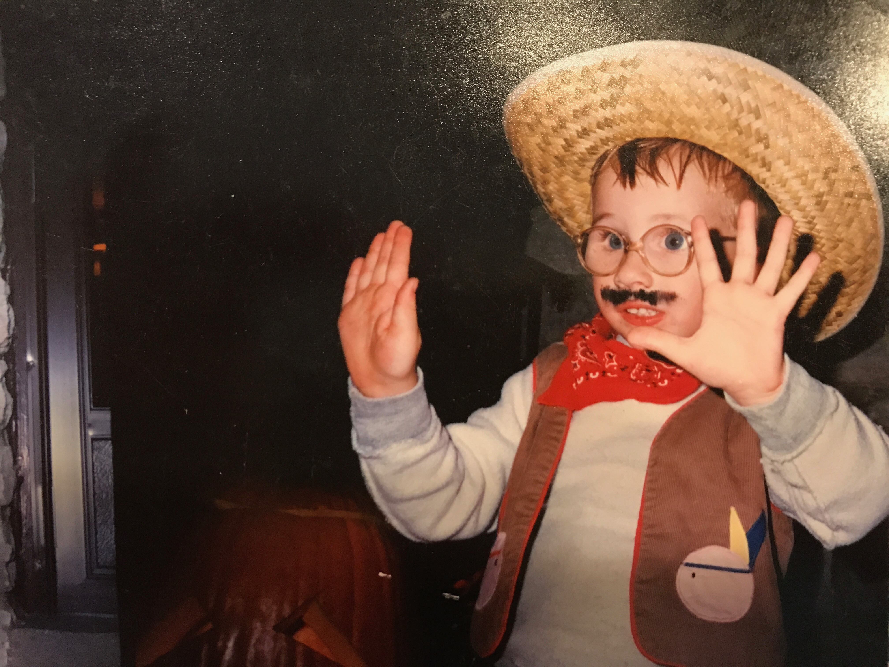

bamboozled and befuddled!
Somebody listened to too much country and western growing up, but hasn't faced the comeuppance yet.
A victim of disorganized thinking
A very serious clown person
I once ate pancakes 144 days in a row

Comestibles and victuals
Pancakes
Peanut Butter Cookies
Rotating Sandwiches
List of Sandwiches
Crispy Cheesy Pan Pizza
Interesting for bums and others associated
The Northwoods Baseball Radio Network
World's Largest Photo of New York City
RIP Stobey
The Great Loop
Minnesota Bird Songs
Baseball Reference
What if it was one big Tour?
To be honest, it has to be said, now more than ever, at the end of the day, I'm not going to lie to you, it literally is what it is: the new normal.